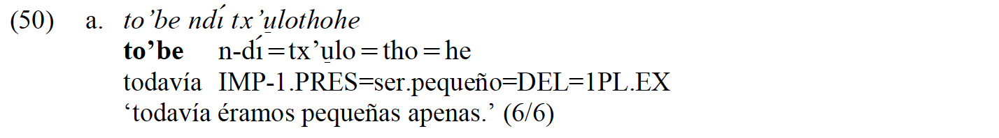
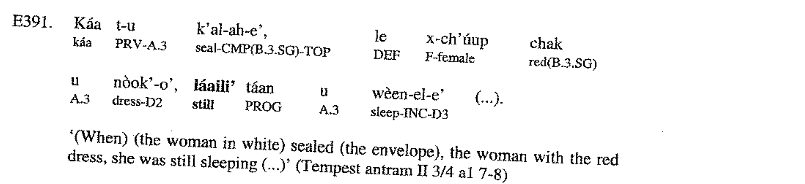
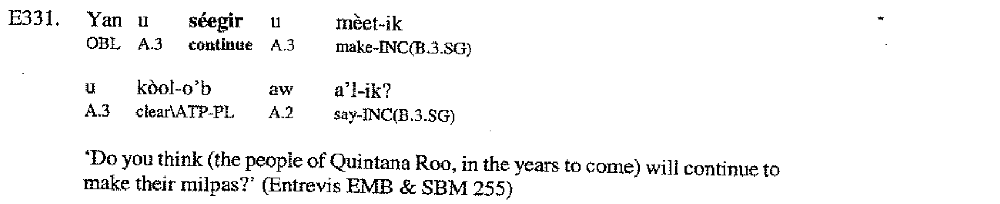

Continutives in North America
1. Languages
All North American languages included in the sample.
1.1. List
1.2. Map
2. Examples
Otomanguean (> Eastern Otomanguean)
Isthmus Zapotec [Pickett, … Cerqueda (2001); pickett2007, pp. 80; 115]

The continuative marker: ru’.
Isthmus Zapotec (Pickett 2007:97)

The continuative marker: de yanna.
Otomanguean (> Western Otomanguean)
Querétaro Otomi (Palancar 2009:363)

The continuative marker: to’be.


Athabaskan-Eyak-Tlingit (> Athabaskan)
Navajo (Young and Morgan 1987:13)

The continuative marker: t’ah(dii).
Mayan
Yucatec Maya (Bohnemeyer 2001:394)

The continuative marker: láaili’ …-e’.
Yucatec Maya (Bohnemeyer 2001:350)

The continuative marker: sèegir.


3. Parameters
3.1. Morposyntactic status
3.2. Meaning in combination with negation
3.3. TAM restrictions
3.4. Expectation implicature
3.5. Adjacent meanings
3.6. Other uses
3.7. Diachronic sources
References
Andrews, J. R. 2003. Introduction to Classical Nahuatl. Norman: University of Oklahoma Press.
Bohnemeyer, J. 2001. The Grammar of Time Reference in Yukatek Maya. München: Lincom Europa.
Crippen, J. 2008. Notes on tlingit grammar.
Davidson, M. 2002. Studies in wakashan (nootkan) grammar.
Martin, J. B. 2011. A Grammar of Creek (Muskogee). Lincoln: University of Nebraska Press.
Melnar, L. R. 2004. Caddo verb morphology.
Miller, A. 2001. A Grammar of Jamul Tiipay. Berlin, New York: Mouton de Gruyter.
Miyaoka, O. 2012. A Grammar of Central Alaskan Yupik: An Eskimo Language. Berlin: Mouton de Gruyter.
Montgomery-Anderson, B. 2008. A reference grammar of oklahoma cherokee.
Okrand, M. 1977. Mutsun grammar.
Oxford, W. 2007. Towards a grammar of innu-aimun particles.
Palancar, E. 2009. Gramática Y Textos Del Hñöñhö: Otomí de San Ildefonso Tultepec, Queretaro. Mexico City: Plaza y Valdés.
Pickett, V. B. 2007. Vocabulario zapoteco del istmo: Español-zapoteco y zapoteco-español.
Pickett, V. B., C. Black and V. M. Cerqueda. 2001. Gramática popular del zapoteco del istmo, segunda edición (electrónica).
Young, R. W. and W. Morgan Sr. 1987. The Navajo Language: A Grammar and Colloquial Dictionary. Albuquerque: University of New Mexico Press.
Zahir, Z. 2018. Elements of lushootseed grammar in discourse perspective.